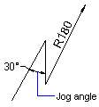

|
AddDimRadialLarge Method |
Creates a jogged radial dimension for an arc, circle, or polyline arc segment.
Signature
RetVal = object.AddDimRadialLarge(Center, ChordPoint, OverrideCenter, JogPoint, JogAngle As Double)
Object
ModelSpace Collection, PaperSpace Collection, Block
The objects this method applies to.
Center
Variant (three-element array of doubles); input-only
The 3D WCS coordinates specifying the center of the arc, circle, or polyline arc segment.
ChordPoint
Variant (three-element array of doubles); input-only
The 3D WCS coordinates specifying the chord point for the arc.
OverrideCenter
Variant (three-element array of doubles); input-only
The 3D WCS coordinates specifying the override center location or pick point.
JogPoint
Variant (three-element array of doubles); input-only
The 3D WCS coordinates specifying the jog location or pick point.
JogAngle
Variant (three-element array of doubles); input-only
The 3D WCS coordinates specifying the jog angle.
RetVal
DimRadialLarge object
The newly created jogged radius dimension.
Remarks
 |
The Center is the center of the arc, circle, or polyline arc segment being dimensioned. The OverrideCenter is the origin point of the dimension.
Note To access this method, use the AcadBlock, AcadModelSpace, or AcadPaperSpace interface.
| Comments? |